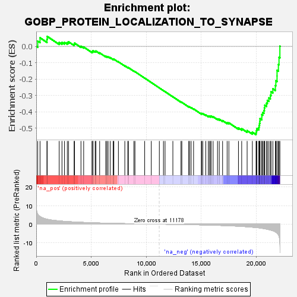
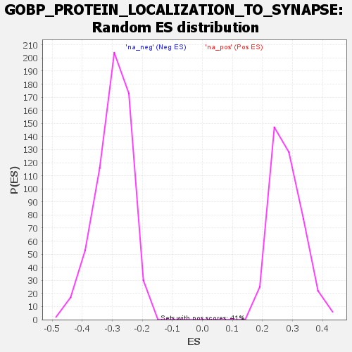

| | | Dataset | deseq_dnfgfr_res_for_gsea |
| Phenotype | NoPhenotypeAvailable |
| Upregulated in class | na_neg |
| GeneSet | GOBP_PROTEIN_LOCALIZATION_TO_SYNAPSE |
| Enrichment Score (ES) | -0.53978 |
| Normalized Enrichment Score (NES) | -1.8177668 |
| Nominal p-value | 0.0 |
| FDR q-value | 0.089155875 |
| FWER p-Value | 0.794 |
Table: GSEA Results Summary

Fig 1: Enrichment plot: GOBP_PROTEIN_LOCALIZATION_TO_SYNAPSE
Profile of the Running ES Score & Positions of GeneSet Members on the Rank Ordered List
| SYMBOL | RANK IN GENE LIST | RANK METRIC SCORE | RUNNING ES | CORE ENRICHMENT | | 1 | Mpp4 | 136 | 5.277 | 0.0321 | No |
| 2 | Rap1a | 345 | 4.091 | 0.0523 | No |
| 3 | Zdhhc2 | 974 | 2.632 | 0.0430 | No |
| 4 | Snap23 | 998 | 2.605 | 0.0608 | No |
| 5 | Rab8a | 2087 | 1.730 | 0.0241 | No |
| 6 | Rapgef4 | 2340 | 1.604 | 0.0243 | No |
| 7 | Stau2 | 2570 | 1.480 | 0.0246 | No |
| 8 | Gpc6 | 2826 | 1.382 | 0.0231 | No |
| 9 | Stau1 | 2939 | 1.335 | 0.0277 | No |
| 10 | Nrxn1 | 3443 | 1.158 | 0.0133 | No |
| 11 | Snap47 | 3485 | 1.145 | 0.0198 | No |
| 12 | Cnih3 | 4066 | 0.974 | 0.0006 | No |
| 13 | Snap25 | 4312 | 0.910 | -0.0039 | No |
| 14 | Vps35 | 5065 | 0.736 | -0.0327 | No |
| 15 | Ghsr | 5145 | 0.719 | -0.0310 | No |
| 16 | Kif5b | 5159 | 0.717 | -0.0264 | No |
| 17 | Asic2 | 5356 | 0.675 | -0.0304 | No |
| 18 | Zdhhc15 | 5423 | 0.661 | -0.0286 | No |
| 19 | Lgi1 | 5765 | 0.597 | -0.0397 | No |
| 20 | Arhgap44 | 6318 | 0.507 | -0.0611 | No |
| 21 | Dlgap1 | 6421 | 0.493 | -0.0621 | No |
| 22 | Stx3 | 6532 | 0.474 | -0.0637 | No |
| 23 | Npcd | 6720 | 0.448 | -0.0689 | No |
| 24 | Stx4a | 6992 | 0.408 | -0.0782 | No |
| 25 | Nptxr | 7057 | 0.400 | -0.0782 | No |
| 26 | Cacng3 | 7470 | 0.343 | -0.0944 | No |
| 27 | Nptx2 | 8052 | 0.275 | -0.1187 | No |
| 28 | Nptx1 | 8321 | 0.239 | -0.1291 | No |
| 29 | Mapt | 8381 | 0.231 | -0.1301 | No |
| 30 | Gpc4 | 8882 | 0.169 | -0.1515 | No |
| 31 | Kif5c | 8975 | 0.159 | -0.1545 | No |
| 32 | Mapk10 | 9858 | 0.075 | -0.1939 | No |
| 33 | Prkcz | 10458 | 0.019 | -0.2209 | No |
| 34 | Rab27b | 11191 | -0.001 | -0.2541 | No |
| 35 | Map2k1 | 11565 | -0.041 | -0.2707 | No |
| 36 | Nsg1 | 11710 | -0.056 | -0.2768 | No |
| 37 | Adam22 | 12420 | -0.107 | -0.3081 | No |
| 38 | Rapsn | 13159 | -0.187 | -0.3402 | No |
| 39 | Kif5a | 13236 | -0.196 | -0.3422 | No |
| 40 | Gsk3b | 13858 | -0.257 | -0.3685 | No |
| 41 | Grin2a | 13944 | -0.267 | -0.3704 | No |
| 42 | Abhd17b | 14080 | -0.284 | -0.3745 | No |
| 43 | Vamp2 | 14302 | -0.314 | -0.3822 | No |
| 44 | Adam10 | 15006 | -0.414 | -0.4110 | No |
| 45 | Clstn1 | 15042 | -0.420 | -0.4096 | No |
| 46 | Reln | 15139 | -0.433 | -0.4108 | No |
| 47 | Cacng2 | 15411 | -0.475 | -0.4196 | No |
| 48 | Git1 | 15644 | -0.512 | -0.4264 | No |
| 49 | Nlgn1 | 15748 | -0.526 | -0.4273 | No |
| 50 | Rab11a | 15863 | -0.544 | -0.4285 | No |
| 51 | Pclo | 15889 | -0.547 | -0.4257 | No |
| 52 | Baiap2 | 16078 | -0.580 | -0.4300 | No |
| 53 | Gphn | 16479 | -0.652 | -0.4434 | No |
| 54 | Homer1 | 16638 | -0.678 | -0.4456 | No |
| 55 | Cdk5 | 16940 | -0.740 | -0.4539 | No |
| 56 | Dlg2 | 17353 | -0.831 | -0.4665 | No |
| 57 | Camk2a | 17511 | -0.868 | -0.4673 | No |
| 58 | Hspb1 | 18383 | -1.121 | -0.4987 | No |
| 59 | Cacng7 | 18676 | -1.229 | -0.5030 | No |
| 60 | Hras | 19171 | -1.415 | -0.5151 | No |
| 61 | Zdhhc12 | 19647 | -1.657 | -0.5246 | No |
| 62 | Stx1b | 19983 | -1.829 | -0.5265 | Yes |
| 63 | Dlg1 | 20021 | -1.857 | -0.5147 | Yes |
| 64 | Lrrtm1 | 20058 | -1.879 | -0.5027 | Yes |
| 65 | Klc1 | 20235 | -1.981 | -0.4964 | Yes |
| 66 | Grip2 | 20256 | -1.995 | -0.4828 | Yes |
| 67 | Dag1 | 20300 | -2.024 | -0.4701 | Yes |
| 68 | Slitrk3 | 20332 | -2.051 | -0.4566 | Yes |
| 69 | Bsn | 20343 | -2.060 | -0.4421 | Yes |
| 70 | Nlgn3 | 20503 | -2.211 | -0.4333 | Yes |
| 71 | Nphs1 | 20504 | -2.213 | -0.4173 | Yes |
| 72 | Cplx1 | 20588 | -2.294 | -0.4044 | Yes |
| 73 | Dlg4 | 20700 | -2.399 | -0.3920 | Yes |
| 74 | Kalrn | 20739 | -2.451 | -0.3760 | Yes |
| 75 | Shank1 | 20776 | -2.495 | -0.3595 | Yes |
| 76 | Tnik | 20940 | -2.683 | -0.3475 | Yes |
| 77 | Clstn3 | 21010 | -2.769 | -0.3305 | Yes |
| 78 | Grin2c | 21149 | -2.949 | -0.3154 | Yes |
| 79 | Grip1 | 21284 | -3.143 | -0.2987 | Yes |
| 80 | Scrib | 21342 | -3.253 | -0.2777 | Yes |
| 81 | Mapk8ip3 | 21510 | -3.531 | -0.2596 | Yes |
| 82 | Grin1 | 21738 | -4.158 | -0.2398 | Yes |
| 83 | Gripap1 | 21781 | -4.320 | -0.2104 | Yes |
| 84 | Magi2 | 21890 | -4.752 | -0.1808 | Yes |
| 85 | Nrxn2 | 21891 | -4.752 | -0.1464 | Yes |
| 86 | Map1a | 22013 | -5.718 | -0.1104 | Yes |
| 87 | Iqsec2 | 22069 | -6.361 | -0.0668 | Yes |
| 88 | Nlgn2 | 22148 | -9.797 | 0.0007 | Yes |
Table: GSEA details [plain text format]

Fig 2: GOBP_PROTEIN_LOCALIZATION_TO_SYNAPSE: Random ES distribution
Gene set null distribution of ES for GOBP_PROTEIN_LOCALIZATION_TO_SYNAPSE